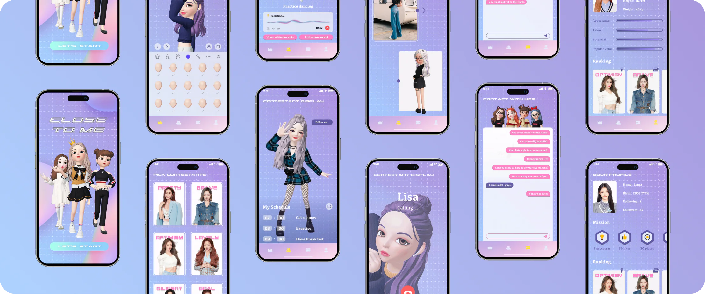
B2C PRODUCT DESIGN · 2024
Close To Me
Close To Me started with a simple gap: a talent competition created attention during the show, but little connection between performances.
The concept explored how audiences could follow a contestant’s everyday world while contestants could shape what they shared.
- Role
- Product Designer
- Scope
- 0→1 Product Experience
- Team
- Cross-functional Team
Problem
The competition ended between broadcasts.
Traditional talent competitions created attention during each performance, but little connection between them. Audiences could watch and vote, yet had few ways to follow a contestant’s everyday progress; contestants had few ways to stay visible. The opportunity was to extend participation without turning the competition into a disconnected social feed.

Research
Two audiences, one missing connection.
Research looked at the competition from both sides, then placed those needs against the market. Contestants needed a way to stay visible between performances; audiences wanted more meaningful ways to follow and support them.
User Research: Contestants and audiences described different problems that pointed to the same gap: attention was created during the show, but connection did not continue after it.
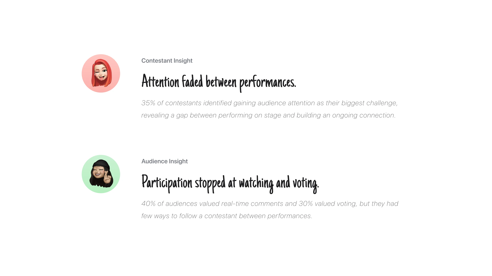
Market Context: Existing platforms supported pieces of the relationship—streaming, fan support, or audience interaction—but none connected discovery, daily presence, and participation around the competition.
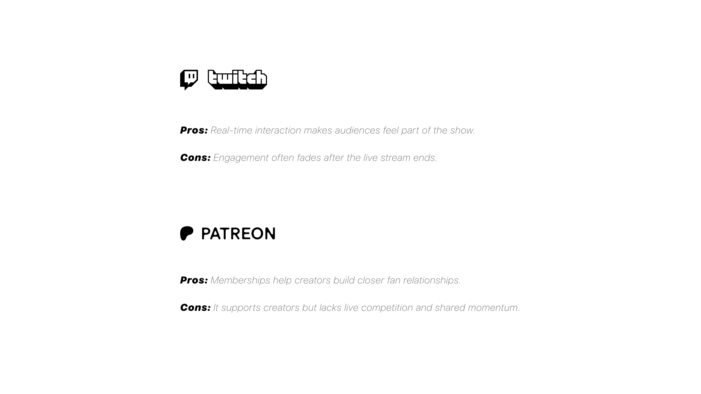
Opportunity
Make digital closeness useful between performances.
The opportunity was to use technology where it made the competition feel more present: AR for discovery, avatars and motion for everyday presence, and shared activities for ongoing participation.
Opportunity 01
Make presence feel tangible.
Avatars, motion, and AR make a contestant’s everyday world feel present.
Opportunity 02
Turn viewing into participation.
Activities, messages, and rewards give audiences clear ways to stay involved.
Opportunity 03
Keep the relationship going.
A shared digital layer keeps both sides connected beyond the live event.
Design Direction
Turn a live competition into a daily relationship.
We designed the competition as a connected loop: invite audiences before the show, give them reasons to return between performances, and let contestants stay present through everyday moments. Each interaction had to strengthen the competition rather than compete with it.
Strategy 01
Extend the moment.
Carry attention from the broadcast into the time between performances.
Strategy 02
Make both sides active.
Give contestants control to share, and audiences reasons to respond.
Strategy 03
Keep the event in view.
Use contextual prompts to connect everyday participation back to the competition.
User Flows
Connect two journeys inside one social world.
Audience and contestant needs were different, but neither journey worked alone. The product needed to help audiences discover and follow a contestant, while giving contestants control over what they shared and when. We mapped both paths as one connected system rather than two separate feature sets.
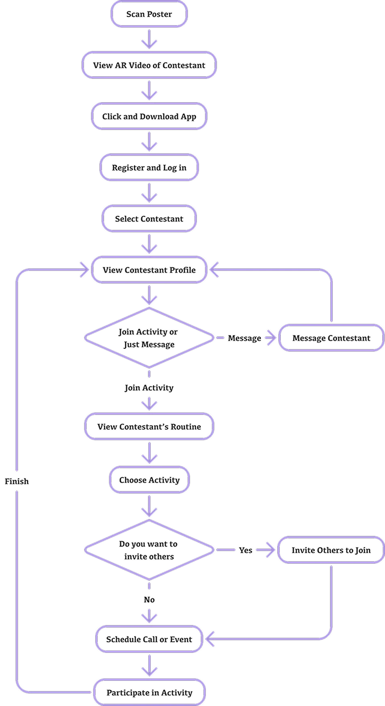
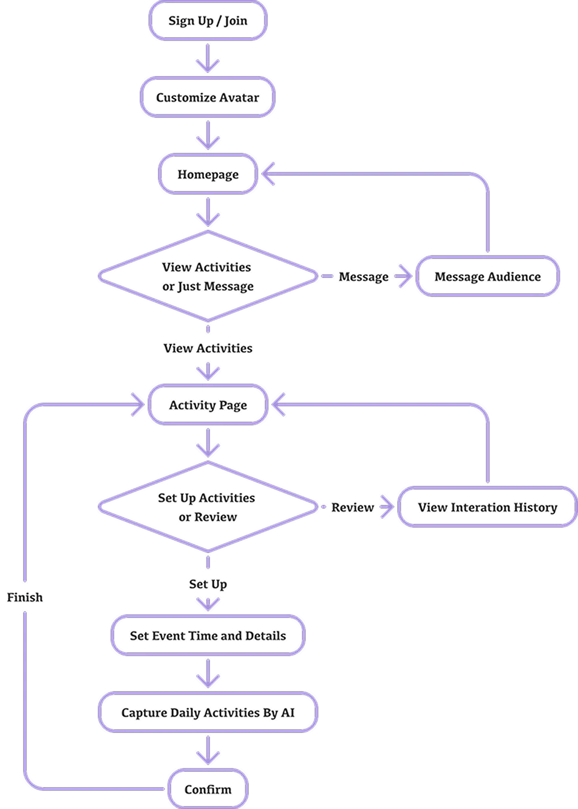
Pre-show Experience
Make the competition discoverable before it begins.
An AR poster and personalized preview gave audiences a reason to enter the experience before the show.
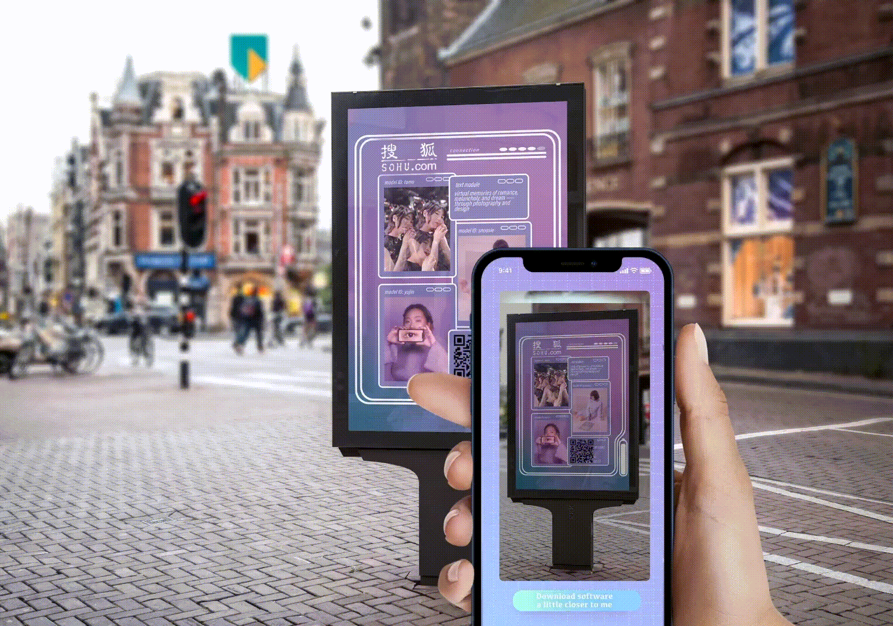
Final Design
Give each side a role in the same story.
That attention then moved into the companion app. Contestants could build an avatar, schedule activities, capture daily routines, communicate with supporters, and shape their profiles. Audiences could discover a contestant, follow their day, join shared activities, message, and track participation. The system kept their actions distinct, but connected both sides to the same competition.
Contestant journey:
Audience journey:

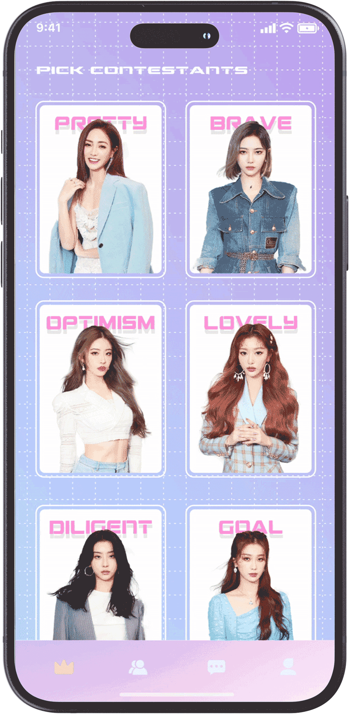
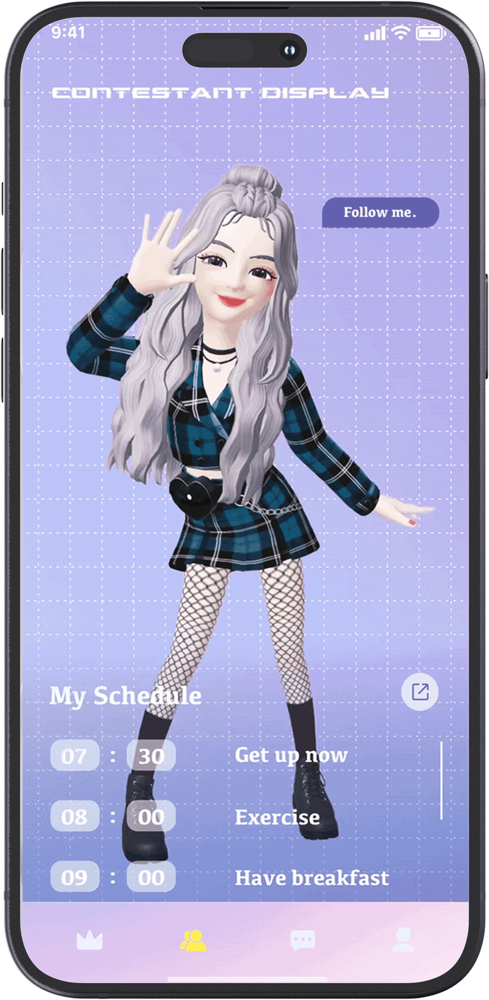

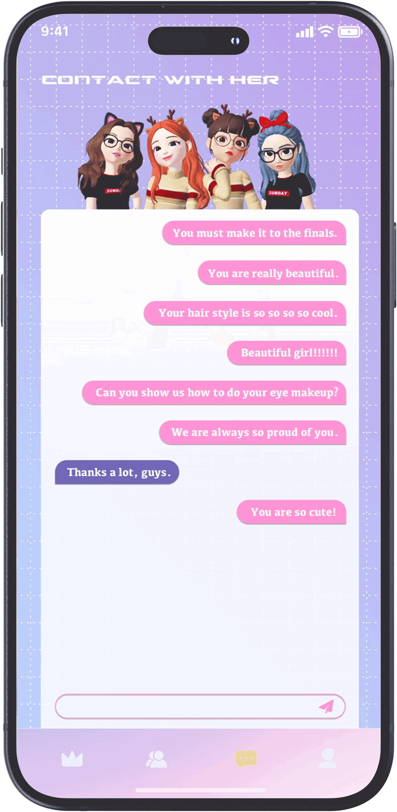
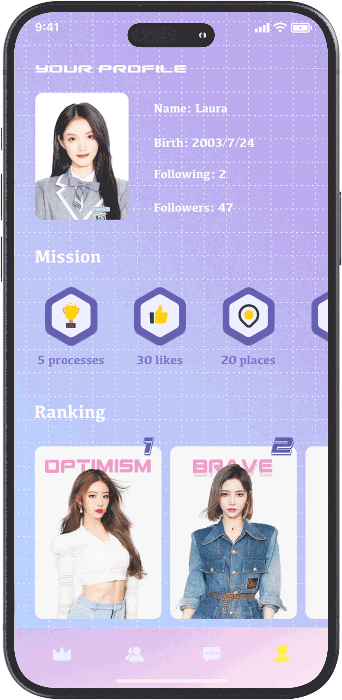
Technology
Make the contestant’s presence feel continuous.
Motion capture and AI-supported voice responses extended a contestant’s presence into the metaverse-inspired environment. The technology mattered because it helped connect the everyday routine to the audience’s experience, not because it added novelty on its own.
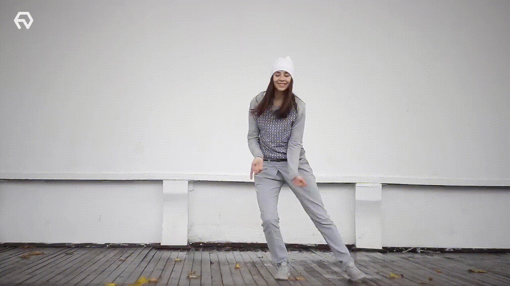
Iteration
Bring the show back into view.
The companion experience had to support everyday participation without losing the competition that gave it meaning. The first direction made the contestant’s routine visible through a personal schedule, but the next moment still depended on the audience remembering to return. The iteration added a contextual showtime reminder, turning the daily experience into a clear path back to the live event.
Make routine participation lead back to the event.
A contestant’s schedule made the companion experience feel alive; a timely reminder connected that everyday layer back to the competition.
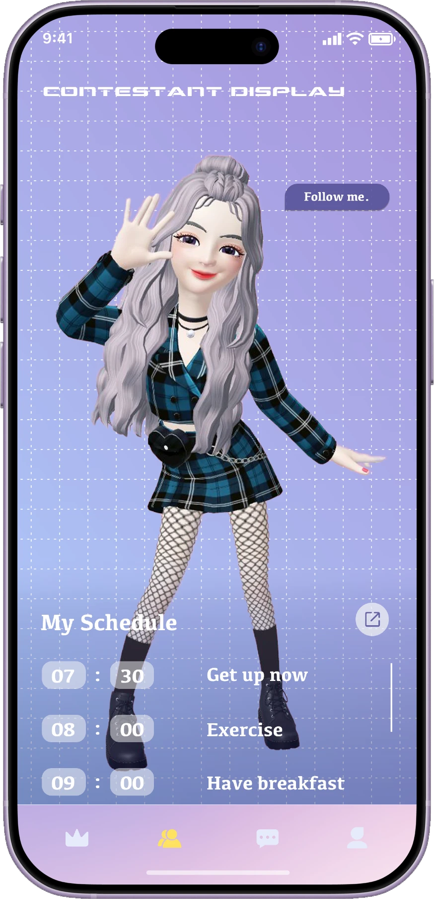
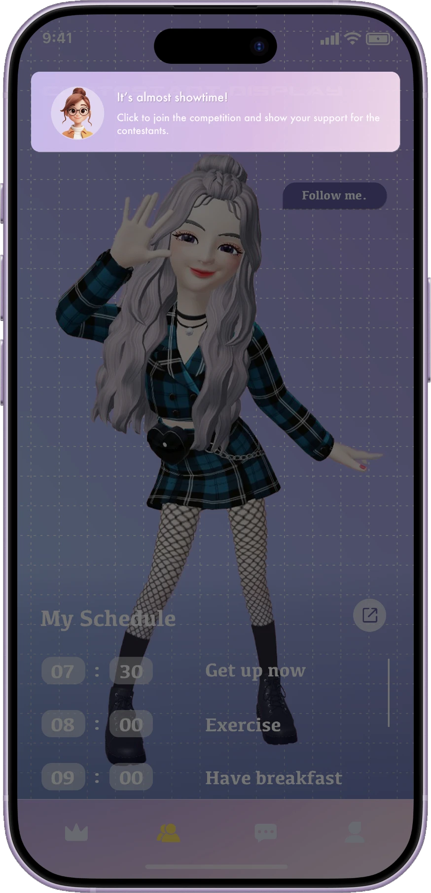
Impact
Extend the competition beyond the broadcast.
Close To Me turned a single performance into an ongoing relationship. Audiences could discover a contestant, follow their daily world, and stay connected through shared activities and messages—creating more reasons to watch and participate between performances.
Reflection
Beyond the product.
Close To Me reinforced that a shared experience is not created by adding more interaction. It becomes stronger when every feature helps the audience and the participant move the same story forward.
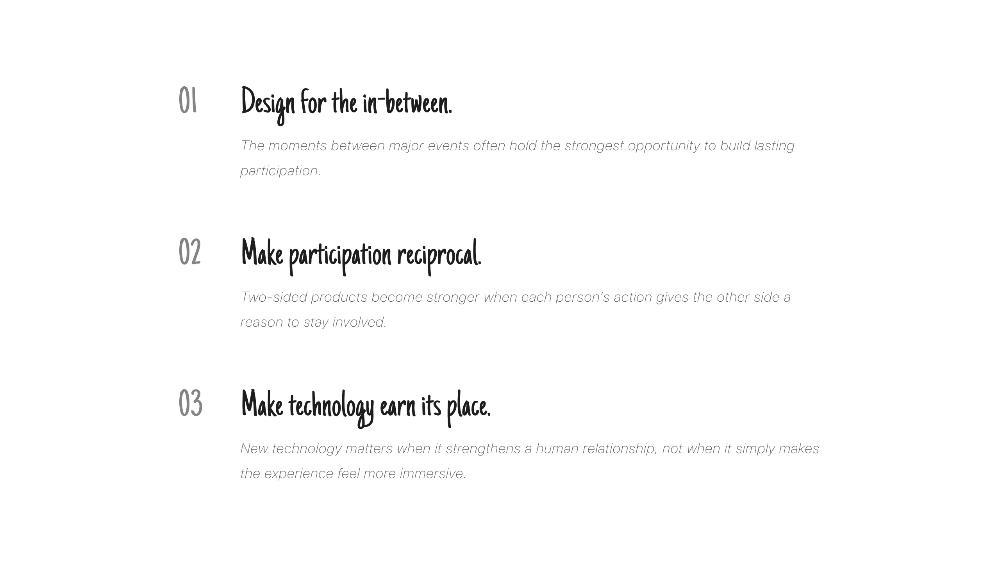